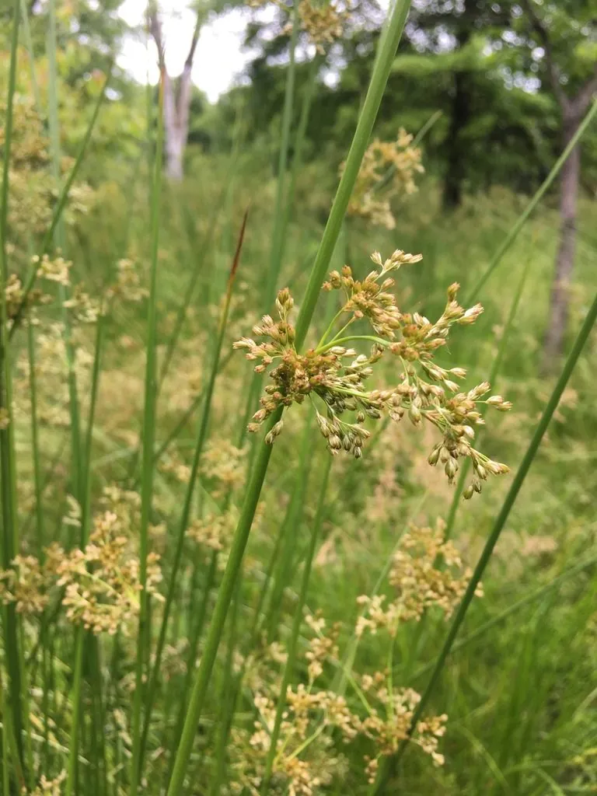

水生植物 · 植物界
灯心草 Juncus effusus

灯心草科灯心草属多年生草本，茎圆柱形、内充白色髓心，常生于湿地，茎髓可作灯芯和药用，是传统经济植物。
- 分类
- 门被子植物门纲单子叶植物纲目禾本目科灯心草科属灯心草属
- 栖息环境
- 湿地、沼泽、溪流边和稻田，喜湿润、阳光充足
- 地理分布
- 北半球温带地区，中国南北各地常见
- 保护级别
- 暂无评估
物种志
灯心草为灯心草科灯心草属的多年生草本，株高 0.5–1.5 米，根状茎横生，茎丛生、圆柱形，直径 1–3 毫米，表面绿色、光滑，内部充满白色海绵状髓心。叶片退化为叶鞘，包裹在茎基部。花序为聚伞花序，侧生于茎顶，花小、淡绿色，花期 5–7 月；果实为蒴果。
灯心草广泛分布于北半球温带的湿地、沼泽、溪流边和稻田，中国南北各地常见，喜湿润、阳光充足和酸性土壤，耐寒、耐瘠薄。它茎内的白色髓心俗称灯芯，过去用于点油灯，也可入药，有利尿、清心之效；茎秆可编织席、垫。栽培以分株和根状茎繁殖为主，需保持土壤湿润；湿地中成片生长时可作为水景绿化材料。
形态与习性
- 株高0.5–1.5 米
- 茎圆柱形，内有白色海绵状髓心
- 花期5–7 月，花小、淡绿色
- 水分喜湿润，常生于浅水和湿泥地
- 光照喜充足阳光
- 土壤酸性至微酸性湿土
- 繁殖分株、根状茎繁殖
- 主要用途茎髓作灯芯、入药，茎秆编织
趣味知识
- 灯心草的茎内充满白色髓心，过去用来做油灯的灯芯。
- 它的叶片退化成叶鞘，光合作用主要由绿色的茎承担。
- 灯心草的髓心可入药，有利尿、清心之效。